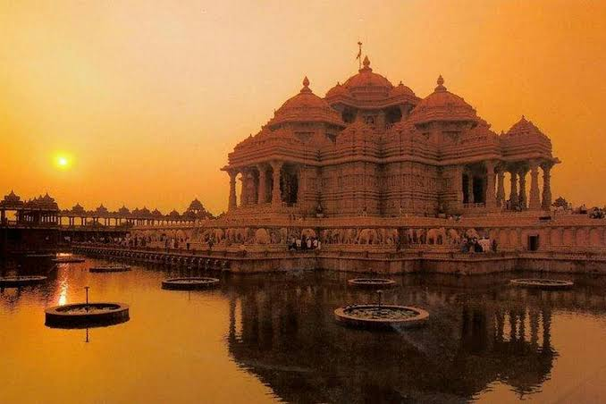

=======
Welcome to Akshardham
>>>>>>> 30056c1e6b7c3258881d09b1785db2aba882033d
INSIGHTS
Swaminarayan Akshardham is a magnificent Hindu temple and cultural complex located in New Delhi, beside the Yamuna River. Known for its intricate stone carvings, peaceful surroundings and celebration of Indian culture, Akshardham offers visitors a blend of spirituality, architecture, history and art.
The centrepiece of the complex is the grand Akshardham Mandir, dedicated to Bhagwan Swaminarayan. Its beautifully carved interiors and exteriors showcase traditional Indian craftsmanship. The Gajendra Peeth, featuring detailed elephant sculptures and stories, is another striking part of the temple.
Visitors can also explore the Exhibitions, which present India's cultural heritage and timeless values through immersive displays, films and a cultural boat ride. The three exhibitions include Sahajanand Darshan – Hall of Values, Neelkanth Darshan and Sanskruti Darshan.
The complex also features the beautiful Bharat Upavan, a garden with statues of inspiring figures from Indian history, and Yogihriday Kamal, a lotus-shaped garden featuring the thoughts and teachings of great leaders and thinkers.
After sunset, visitors can experience the Sahaj Anand Water Show, a multimedia presentation combining water fountains, lights, projections, music and storytelling.
Whether you are interested in architecture, Indian culture, spirituality or simply looking for a peaceful place to explore, Akshardham offers a memorable experience in the heart of Delhi.
LOCATION
Swaminarayan Akshardham is located at NH 24, Pramukh Swami Maharaj Marg, New Delhi – 110092, near the Yamuna River and Akshardham Setu. Its location in East Delhi makes it easily accessible from different parts of Delhi and the National Capital Region.
By Metro
The easiest way to reach Akshardham is by the Delhi Metro. The nearest station is Akshardham Metro Station, which is approximately 350 metres from the complex.
After exiting the metro station, turn right and walk for about 100 metres. Then turn right again and continue walking for approximately 250 metres to reach Gate 1 of Akshardham.
From New Delhi Railway Station
Take the Yellow Line from New Delhi Metro Station towards HUDA City Centre and change at Rajiv Chowk for the Blue Line towards Noida City Centre. Get down at Akshardham Metro Station and walk to the complex.
From Old Delhi Railway Station
Walk to Chandni Chowk Metro Station, take the Yellow Line towards HUDA City Centre and change at Rajiv Chowk for the Blue Line towards Noida City Centre. Get down at Akshardham Metro Station.
Nearby Places
Akshardham is situated in East Delhi, close to the Yamuna and the Noida Link Road. Its location also makes it convenient to combine a visit with other attractions in the eastern and central parts of Delhi.
Useful Information
The Akshardham complex is open Tuesday to Sunday and remains closed on Mondays. The main complex has free entry, while the exhibitions and water show require separate tickets. Visitors should also be prepared for security checks and restrictions on items such as mobile phones, cameras, food, luggage and other electronic devices.